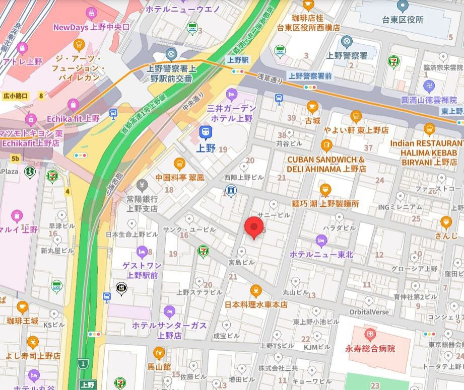

診療時間・所在地
佐藤医院では、患者様のご都合に合わせた診療を提供できるよう、柔軟な診療時間を設けております。
以下をご確認のうえ、ご来院の際にご利用ください。
診療時間
| 時間帯 | 月 | 火 | 水 | 木 | 金 | 土 | 日 |
|---|---|---|---|---|---|---|---|
| 午前9:00～12:00 | ● | ● | ● | ／ | ● | ● | ／ |
| 午後13:00～18:00 | ● | ● | ● | ／ | ● | ／ | ／ |
●＝診療／＝休診
受付時間：午前 8:00～11:00 ／ 午後 12:00～17:00
休診日：木曜日・土曜午後・日曜日
※祝祭日も診療を行っておりますが、休診日もございますので、事前にご確認ください。
診療科目
- 内科
- 循環器科
- 呼吸器科
- 予防医療・健康診断
- 生活習慣病（高血圧、糖尿病等）の治療・管理
その他、ご不明点があればお電話またはメールでお問い合わせください。
所在地
- 〒123-4567 東京都台東区上野0-0-0
- 最寄駅：JR上野駅より徒歩5分
- 当院専用の無料駐車場10台分あり
ご来院の際は、交通状況にご注意ください。最寄駅から徒歩5分の便利な立地です。

お問い合わせ
- 電話番号：00-0000-0000
- FAX：00-0000-0000
- メール：info@sato-clinic-test.jp
※ 電話番号とメールアドレスはサンプルです。実際の連絡先ではありません。